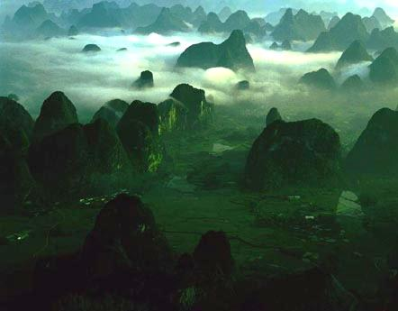
要说桂林山水的来历，照那本再版了不知多少次的《桂林山水的传说》里的说法，还和秦始皇有关。始皇帝一统天下，因海疆属龙王所管，怒而赶山填海。群山被驱赶到桂林的时候，始皇中了龙王的计策，失掉了赶山鞭，于是形态各异的群山就这样留在了桂林，造就了这片山水佳地。
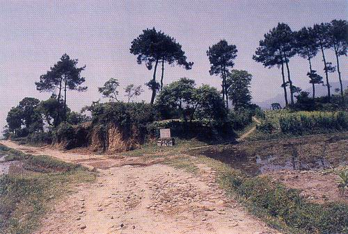
公元前111年，汉武帝平定南越，建立始安县，县城所在就是最初的桂林城。两千多年以前，桂林只是南岭西部一座偏远的小城。
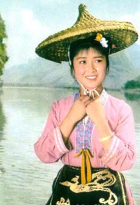
《刘三姐》这部电影可以说是解放至文革这十七年内中国电影的代表作之一，从拍摄完成后，不但在国内，在东南亚华侨中也是长映不衰。刘三姐实在是柳州宜山人，但这部电影的艺术感染力之大，以致于在大多数人的印象里，似乎这位美丽聪慧的壮族歌仙，从来就是与桂林山水联系在一起的。近四十年过去，木龙洞边流水依旧，昔人已去，物是人非，不由得让人想起《春江花月夜》中的千古一问:
“江畔何人初见月，江月何年初照人
人生代代无穷已，江月年年只相似
不知江月待何人，但见长江送流水”
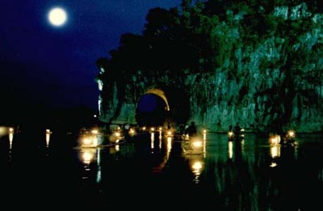
象山是桂林的城徽。每年中秋来临，桂花盛开之后，象山边上的滨江路上往往铺就一地金黄，微风将馥郁的浓香传送，沁人心脾。
象山最美的时候，是在月夜。
从前我心情烦闷的时候，就会选个十五皎皎的月夜，独自去坐在象山对面訾洲上的长草里，默默凝视江面上散碎的月光，静静倾听和风拂过江边凤尾竹的轻响，遥想宋代传奇里韩生化月的那飞扬的逸兴。
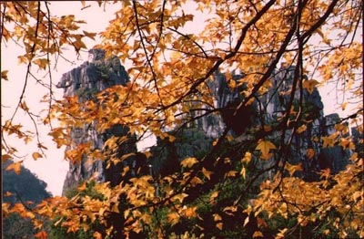
古代南方人中见过骆驼的恐怕很少，否则骆驼山在以前不会只叫做壶山。传说壶山是书生雷酒人的酒壶所化，他为了桂林免遭水淹，要魔王把十万斛水化成酒盛在壶里让他喝，可惜尚未喝完就醉死了。至今山下有雷酒人之墓，因为他有遗言要葬在壶嘴处堵住壶中的余水。
骆驼山险峻难爬，曾经有些胆大的桂林人登顶成功，之后却再没有胆子敢自己下来，还得出动七星区消防队的云梯把他们救下来。
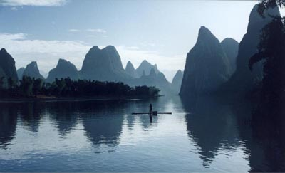
黄布倒影是漓江上最美的地方之一，可惜游船开到这里的时候往往是午餐时间，有些不知道的游客往往于无意中错过了这一景。
《桂林山水的传说》里有一篇犀牛望月的故事，如果我没有记错的话，也许是讲的这里吧。提起犀牛望月，我总是喜欢想像，每当皓月当空，会有灵犀分开这水面凝望。上古时，嫦娥服下了西王母的不死之药离开了后翌，后翌是否也这样凝望过那窈窕飘荡奔月而去的身影，是否也这样凝望过那渺渺月宫？
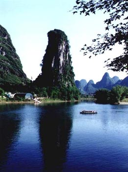
过阳朔碧莲峰，穿行阳朔大桥，就会看见书童山挺拔于田家河与漓江汇合处，倒影江中，清奇无比。半山的地方，有一块夹缝矗石，高丈余，似捧书诵读的书童，因名书童山。
有时候我看书倦了，莫名其妙地会想起这座挺拔的山峰，于是精神为之一振，也是奇怪。
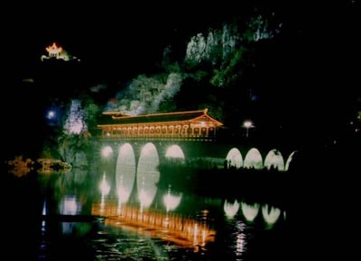
花桥始建于宋代，是七星公园正门入园必经之道。位于灵剑溪与小东江汇合处, 从前因为四旁繁花似锦, 小桥掩映于“满溪流水半溪花”之间, 故名花桥。
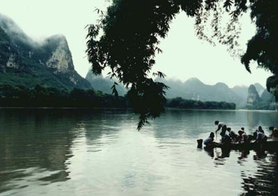
从来没在江边洗过衣服，只在江边钓过鱼，抓过螃蟹，游过水。
漓江之水尚清可浣衣，远游所至的江南之水却让人中心烦忧，不知何时那里的水也能返清，让我们也可以象古人一样，轻松地吟诵，
“江南好，
风景旧曾谙。
日出江花红胜火，
春来江水绿如蓝。”
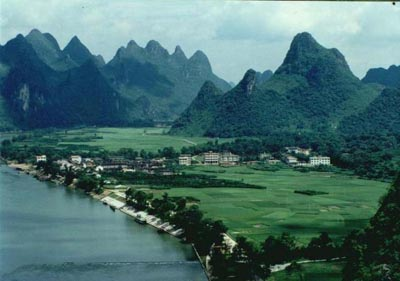
草坪回族自治乡属桂林市郊区人民政府管辖，有时候桂林的企事业单位会组织去那里春游或者秋游，外地游客好象不会去。在我曾经的印象里，那是个平静的小镇。我愿永保这印象而不再去这小镇，就让这景象活在我的记忆中——我已经失去了太多这样平静的小镇了。
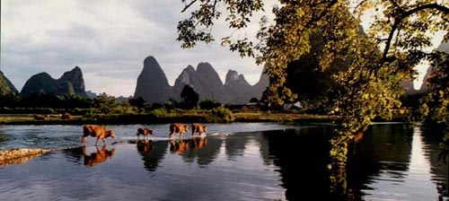
这幅景象恐怕是不少在乡村里生活过的孩童的回忆，在我自己的儿时回忆里，应该还加上几个善吹牧笛的小伙伴，他们能捕到机灵的鸟儿，能捉到狡诈的鱼儿，能采到顶好的野果，能驯服野性的牛马，会说诸般诡怪的故事……长大后再见面时，大家都象变了个人一样，所以鲁迅认不得了闰土，殷离喜欢的只是那个蛮横的，不讲道理的小张无忌。所以金庸要说“不识张郎是张郎”，这一句的意味实在是说不出来的沉痛。
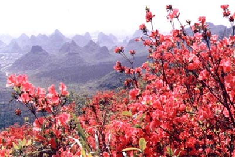
曾在一个四月里去到安徽黄山，岭上杜鹃尚未盛放，只是左一丛，右一簇的藏在林中草木之间，导游说盛放之后漫山遍野，就叫做映山红了，于是想起从前去尧山时所见的映山红来。
尧山的下面是大多数桂林人长眠之地，明代桂林的藩王靖江王家族的陵墓群也在那里，最后一代的靖江王朱亨嘉在崇祯吊死后自称“监国”，要做皇帝，结果被按律处死。他的一个儿子避祸出走，辗转到了扬州定居，他就是“搜尽奇峰打草稿”的石涛，中国山水画别具一格的一代宗师，亦号苦瓜和尚，本名朱若极。
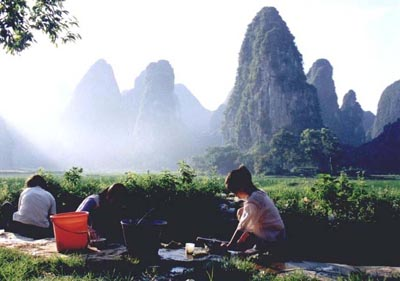
桂林有几个大的华侨农场，是为了安置从印尼或者越南被迫回国的华侨而设立的。我的老师和同学中有不少是归国华侨和他们的子女，说也奇怪，很容易就能把他们区别出来，大概异乡的风霜已经溶于他们的血脉中，成为他们生命的一部分了。
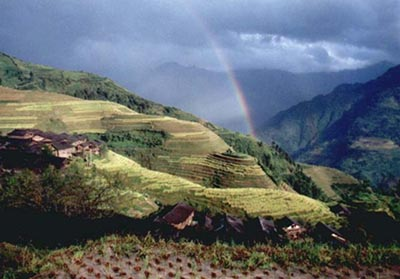
龙胜县的梯田别称“龙脊梯田”，独具特色。我的老家在越城岭的大山里，就在当年红军长征经过的老山界不远的地方，也是这样的景象。木屋建在山顶上，用劈开的竹子从更高的山上引来甘冽的泉水……在都市里住得久了，彩虹在我的印象中竟然也已经成了久远的回忆。这十余年来我们身边的环境在无声无息中发生了剧烈的变化，四季不再分明，天空不再澄澈，我甚至已经不记得上一次看见真的彩虹是在什么时候了。
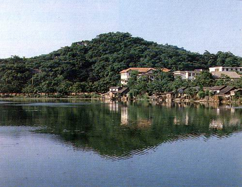
漓江流域属于峰林－槽谷平原，石山林立，洞穴繁多，其中蕴藏着灿烂的远古文化。宝积岩人是在漓江之西的宝积山南麓发现的，一九七九年夏，考古人员在宝积岩中发现了第四纪更新世晚期，距今约三万年前的古人类化石和石器。大部分石器未加修理，制作粗糙，显示出旧石器时代晚期的特征。除了古人类化石，洞中还发现了猕猴、中国熊、巴氏大熊猫、鹿、中国犀、剑齿象等等的化石，这说明古的时候，桂林这一带，有很多很多的物种在生活。
宝积山下那座红顶的建筑是我高中时的母校，考上这所学校曾让我的父母很是为我高兴，但他们从不知道我那三年是并不快乐的，我也永不会让他们知道了。每天下午上完课以后，我和同学常到宝积山上看看变幻的云彩，看看周围的山峰，或者仅仅是在宋代留下的古城垣上走走。湖边的这些曾经的建筑早已经全数在旧城改造中拆除了，包括那座红顶的实验楼。
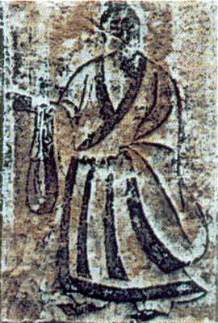
桂林地处岭南，远离中原，其古代文化属于楚文化和百越文化的交融。自唐以来，不少贬官谪吏被发配来此，他们带来的中原民族传统文化中较活跃的积极因素，和他们创作的山水诗词，为山水增色，使桂林山水成其为“人化的自然”。
米芾与苏轼、黄庭坚和蔡襄并称“宋四家”，熙宁七年来桂林任临桂尉，曾作有《阳朔山图》，但和他其它的作品一样，也已失传。这幅他的自画像，刻于伏波山壁。
年轻而有才华的李商隐，开成二年二十七岁时即登进士第，但却一生仕途坎坷。三十五岁时，他来到桂林任桂管观察使府判官，这位“忧伤诗人”在《桂林即事》、《桂林道中作》等诗中一扫其作品中常有的伤感，显示出他在山水中获得的心灵之怡然。
以五言诗见长的宋之问，于唐玄宗即位的当年，被赐死于桂州，旅桂的他留下了不少真切的抒情写景之作，“桂林风景异，秋似洛阳春。晚霁江天好，分明愁煞人……”（《始安秋日》）。
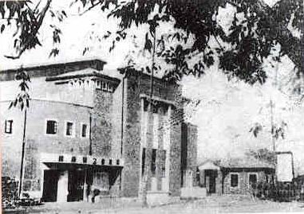
抗战军兴，自武汉沦陷后，桂林成为国统区内最繁华的城市之一，文化人士云集于此，文学、戏剧、音乐、美术、新闻、出版、教育、社会科学等事业蓬勃发展，桂林成了全国各地抗战文化的交汇点，一跃成为一座“文化之城”。
这一期间在桂林出现了大量的作品，文学创作如茅盾的《霜叶红似二月花》，巴金的《火》、《桂林的微雨》，艾芜的《荒野》等等。戏剧家田汉、欧阳予倩、瞿白音等还在桂林发起了西南第一届戏剧展览会，盛况空前。徐悲鸿所作的《漓江春雨》、《马》和《鸡鸣不已》等都是传世之作。
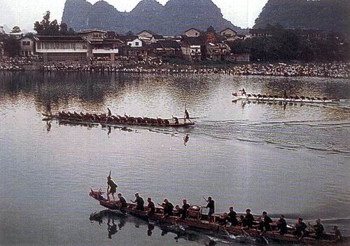
端午是桂林人的一个大节，除了悬挂艾叶和包粽子的风俗，自古以来，就有十年一大扒，五年一小扒的赛龙舟的风俗。每到龙舟赛时，哪怕大雨滂沱，两岸也照样满是观看龙舟赛的人们插在水中。赛场传出的鞭炮声似乎全城都能听见，解放桥上的民警不断提醒着行人不得在桥上停留，江边来往的公共汽车开始免费接送市民…… 不知道现在的龙舟赛是个什么样子，记忆中除了九二年那场罕见的雪，就只有龙舟赛能牵动几乎全城人的注意。
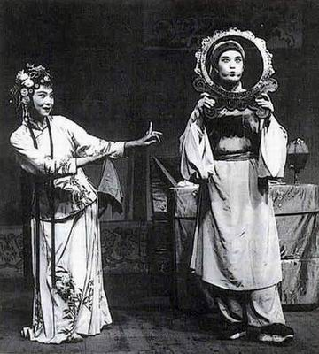
小的时候，周围还是有很多老人喜欢本地戏的，现在这些老人也不知道还在不在。桂林的地方戏有不少，比如桂剧、彩调、文场、零零落、桂林渔鼓等等。桂剧源于祁阳戏，彩调于清乾嘉年间脱胎于湖南花鼓戏，都是用桂林官话来演唱的。
最熟悉的是彩调，《王三打鸟》是出有名的彩调小戏，王三扛着鸟枪甫一出场的那段唱，我想，我和我的许多同学现在仍旧都能够唱出来。我还记得，王三喜欢的是毛姑妹，怕的是毛姑妹她妈妈，但我竟从未有机会全本看完过，今后也不见得能有这种机会，因为这些本地戏似乎和从前的生活一样，也在无声无息中逐渐消逝着。
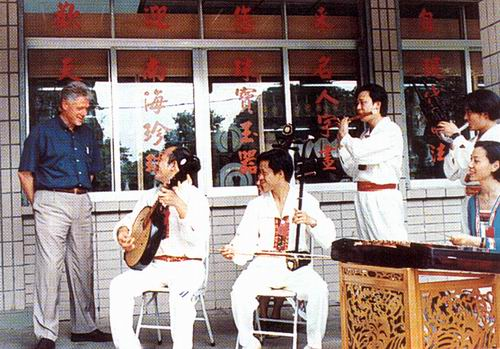
拥有奇特地面景观的桂林，每年吸引着来自世界各地的游客。
大概从前尼克松总统夫妇对于桂林这座城市的评价至高，风流而有趣的克林顿总统先生在卸任前的访华行程上，特意挤出了一个白天留给桂林。因为在阳朔一个小渔村的流连忘返，还推迟了原定飞往香港的时刻。按我们中国人的观点，他的桂林之行不免有些假公济私；但对于桂林人民来说，克林顿这活广告，倒是欢迎之至。